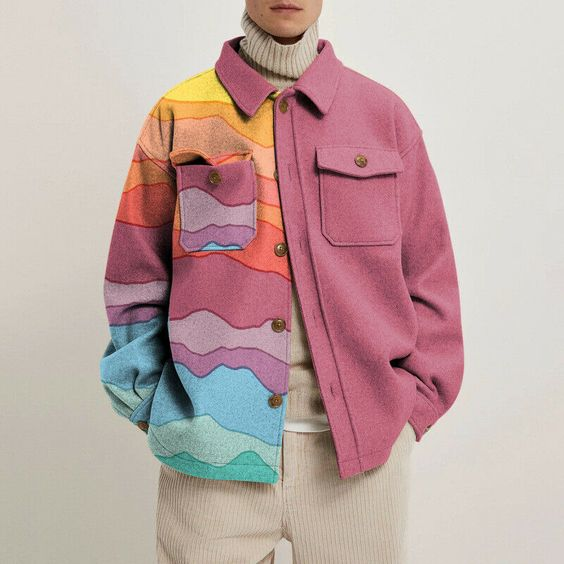

JACKET
Jenis Jaket
Jaket biker
Jaket biker biasanya terbuat dari kulit dengan desain pendek dan ketat disertai kancing atau risleting.

Men Stitching Color Turn-down Collar Button Up Jacket Casual Trucker Coat Tops This item is only f or one jacket. Due to different shooting and display equipment. The color may be slightly differ ent. Thank you for your understanding! Please note this is in Asian sizing, smaller than western size e.g. UK, US, AU. Please check the measurements carefully before making a purchase. Please allow 2-4cm discrepancy due to different measurement method. If you are not sure which size to b uy, please provide
Sejarah Jaket
Kata jaket berasal dari Prancis, 'jaquette' yang mengacu pada tunik ringan. Seiring perkembangan zaman, jaket di Prancis juga disebut mantol. Kulit jadi bahan utama dalam pembuatan jaket. Jaket kulit pertama kali dibuat untuk digunakan oleh pilot atau lebih dikenal sebagai Flight Bomber Jacket. Ketika Perang Dunia I, jaket dibuat untuk melindungi suhu tubuh dari embusan angin. Pada saat itu, jaket merupakan pakaian yang identik untuk digunakan oleh kaum pria.